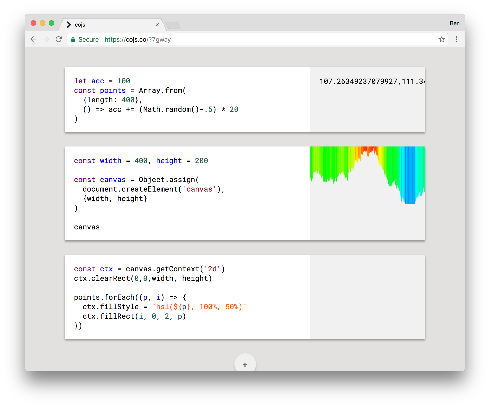

Making a lot of things
Thanks
Everyone
Codegram
Hi, I'm Ben
Developer/Adventurer based in Oxford, UK
You might know me from …
2014 - FutureJS
2015 - Full Stack Fest
2016 - Full Stack Fest (microtalk)
Demos
[phones]
[light hacks]
This is not a demo talk
Making a lot of things
#microhacks
[dither]
[cursory-hack]
[cubes]
[scan]
[cardboctober]
[webgl-hacks]
Benefits
Satifying
Fun
Understanding libraries & APIs
Exploring ideas
Small things can lead to bigger things
[ruby]
[publishing rooms]
What features enhance creativity?
1. Exploration
2. Constraint
[igor]
My freedom thus consists in my moving about within the narrow frame that I have assigned to myself for each one of my undertakings. I shall go even further: my freedom will be so much the greater and more meaningful the more narrowly I limit my field of action and the more I surround myself with obstacles. Whatever diminishes constraint diminishes strength. The more constraints one imposes, the more one frees oneself of the claims that shackle the spirit.Igor Stravinsky
Constraint breeds creativity
Today: applying constraint & exploration
1. The code we write
2. The things we build
The code we write
cojs.co

An experimental code exploration tool
Partially inspired by d3.express
Integrated discovery environment

unit of code:
Content vs Functionality
A technical look to cojs.co
A unit of JavaScript
Challenge 1.
Are we talking JavaScript?
Will it parse?
Text → Tokens → Abstract Syntax Tree
Challenge 2.
Capturing output
x = 10
y = 32
x + y
Program
ExpressionStatement
AssignmentExpression
Operator (=)
Identifier (x)
Literal (10)
ExpressionStatement
AssignmentExpression
Operator (=)
Identifier (y)
Literal (32)
ExpressionStatement
BinaryExpression
Operator (+)
Identifier (x)
Identifier (y)
const htm = `
<html><head></head><body>
<script>
let memo; const O = V => memo = V;
${src}
/* todo: print memo */
</script>
</body></html>`
const blob = new Blob([htm], {type: 'text/html'})
const url = URL.createObjectURL(blob)
iframe.src = url
And we're done
Input → Process → Evaluate → Show
Works for any language
[css, glsl, sql, lua, english]
Provides exploration
Lots of units of JavaScript
Live, reactive, explorative code
[coding doesn't have to look like coding]
sonicpi, msp
Lots of people
* Live Collaboration
* Forking
[todo]
/ The way we code
2. The things we build
Microhack
not like regular work
not like a side project
not like a full hack
[idea]
Chill out, and talk to people about what interests you
There's a reason why so many seminal works of art start off on the back of a bar napkin…
…it's because they were in a bar.James Victore
Be inspired by yourself
[planning]
Screw planning
[starting]
Scheduling big things is hard
Plan to build the smallest thing you can
[coding]
Explore toward a solution
Move your target
[finish]
Have a place to put stuff
Finish now, tinker later
[done!]
Make a lot of the things you've made
Thanks
@benjaminbenben
(send me your #microhacks – I'd love to see them)